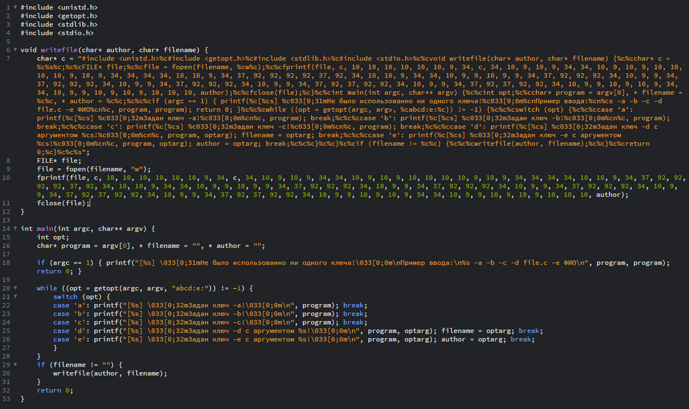
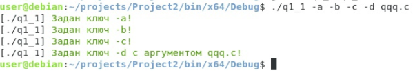
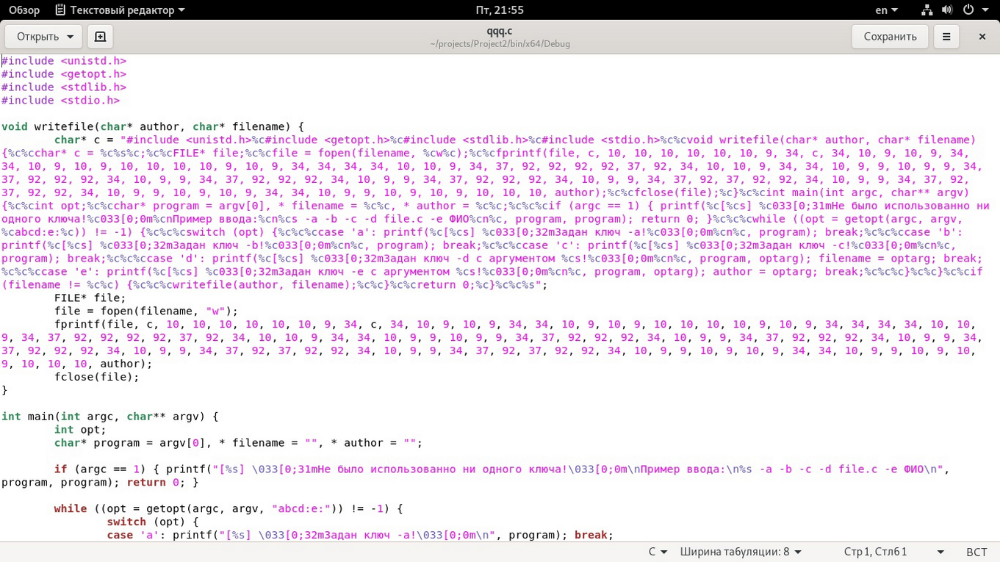
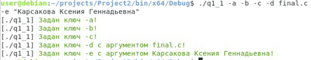
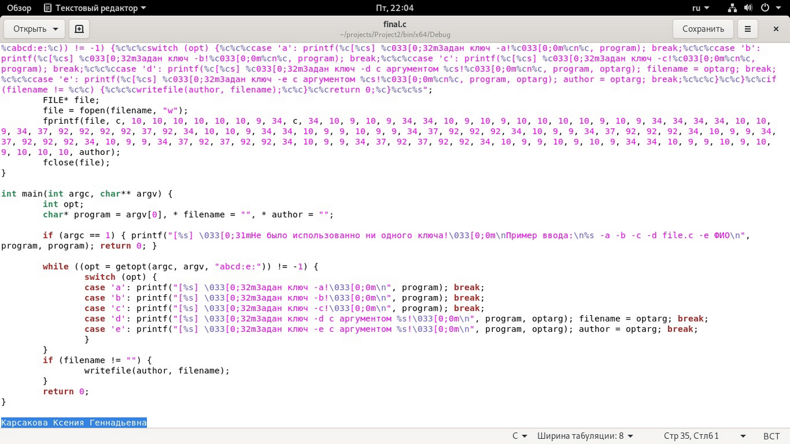

Лабораторная работа №7.Разработка команды Linux.
Задание 6. Написать программу, которая:
может обработать опции (ключи) строки запуска -a, -b, -c, -d proga.c, -e fio;
если задан ключ -d, то программа создаёт файл с именем имя программы.c и пишет в него свой исходный текст;
ключ -e должен иметь аргумент — строку «ФИО»; если заданы ключи -d и -e, то программа дописывает в файл с именем имя программы.c (который создаётся по ключу -d) с новой строки - «Автор — ФИО», где «ФИО» берётся из аргумента ключа -e;
реакция на остальные ключи: печать сообщения «Имя программы: задан ключ: «-ключ» - обработано».
Код программы:

1. Переносим исходник программы в Домашнюю папку.
2. С помощью команды apt-get install -y gcc устанавливаем компилятор.
3. Транслируем исходник в программу с помощью gcc -o quine quine.c
4. Вводя ./quine -a -b -c -d qqq.c получаем информацию о задании ключей, создается файл с названием «qqq.c» с содержащимся в нем исходным кодом программы.


5. При задании ключа -e в заданном файле прибавляется ФИО

